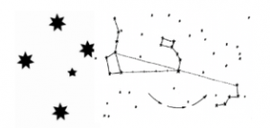

Formação
III Congresso Mundial de TD
Um caminho transdisciplinar: experiências e compreensões

Joseph Brenner. Vitoria Mendonça de Barros. Ignacio Gerber. Roberto Crema. Sergio Bolliger. Julieta Haidar. Patrick Paul. Maria F. de Mello.
Um caminho transdisciplinar: experiências e compreensões – Publicação digital
III CONGRESSO MUNDIAL DE TRANSDISCIPLINARIDADE
CENTRO DE EDUCAÇÃO TRANSDISCIPLINAR – CETRANS | São Paulo, Brasil

GUIA INTERATIVO DAS 5 SEMANAS APRESENTADAS
III-CMTD-SEMANAS-CETRANS – PDF baixar
INAUGURAÇÃO DO III CONGRESSO MUNDIAL DE TRANSDISCIPLINARIDADE